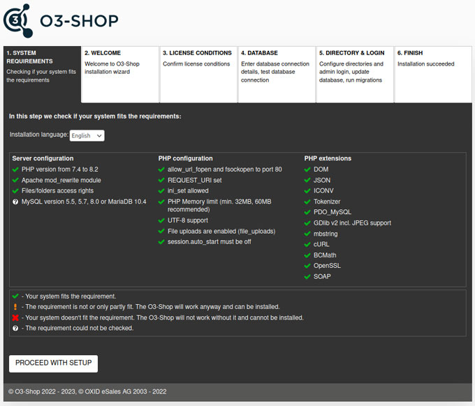

Installation from scratch
Learn how to install the O3-Shop from scratch.
Retrieve the files needed for the shop with the help of Composer, the dependency manager for PHP.
Then run the web-based setup and install the shop.

Ensure server and system requirements
Contents: Server, shared hosting, managed server, server farm with load balancing and database cluster, Linux, web server, Apache 2.2 + 2.4, MySQL 5.5, 5.7 or 8.0, MariaDB 10.4, PHP from 7.4 to 8.2, Composer, OpenSSL.
Prepare installation
Contents: Install Composer, provide shop files, configure Apache, adjust file and directory permissions, create database.
Run setup
Contents: Web-based setup, check system requirements, select main country of delivery and language of shop, licence conditions, database, database name, specify database user and password, demo data, shop directories, specify access data for administration area, shop administrator.
Complete installation
Contents: Check deletion of setup directory, set file and directory permissions, write permissions for /source/out/pictures, /source/out/media, /source/log, /source/export, /source/tmp, /var, write protection for .htaccess, config.inc.php